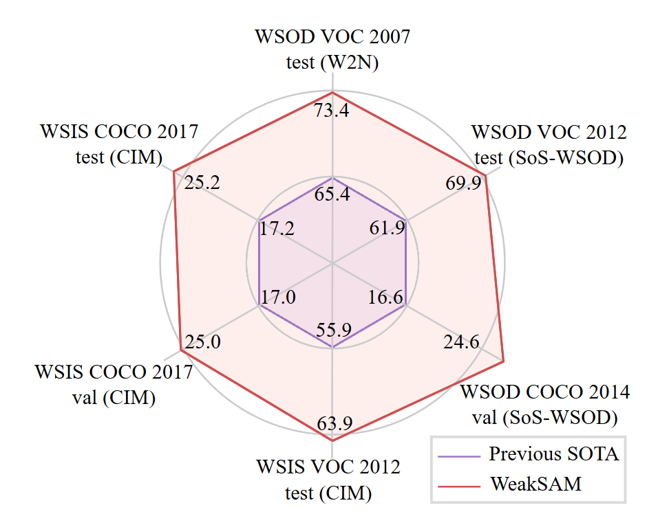

|
Junwei Zhou I'm a first year Ph.D. student at Dartmouth College, advised by Prof. Yu-Wing Tai. Previously, I have worked with Prof. Ming-Hsuan Yang, Prof. Lu Qi, and Prof. Xinggang Wang. I received my B.E. from Huazhong University of Science and Technology. My research interest mainly lies in computer vision, generative models, and 3D/4D vision. |
{kind=link}
Research |

|
CoCo4D: Comprehensive and Complex 4D Scene Generations
Junwei Zhou, Xueting Li, Lu Qi, Ming-Hsuan Yang, Arxiv, 2025 project page / arXiv Generating a comprehensive and complex 4D scene by dividing a 4D scene and progressive dynamic content extrapolation. |

|
CoCo4D: Comprehensive and Complex 4D Scene Generations
Junwei Zhou, Xueting Li, Lu Qi, Ming-Hsuan Yang, ICLR, 2025 project page / arXiv Given a text prompt describing multiple objects and their spatial relationships, our method generates a 3D scene depicting these objects naturally interacting with one another. |
|

|
CoCo4D: Comprehensive and Complex 4D Scene Generations
Lianghui Zhu*, Junwei Zhou*, Yan Liu, Xin Hao, Wenyu Liu, Xinggang Wang, ACM Multimedia, 2024 project page / arXiv SAM in helping weakly-supervised instance perception task. |
Academic Service |
Reviewer, ICLR 2025
|
|
Website borrowed from JonBarron. |